28QR画像から二段階認証を登録
二段階認証のQR画像を読み取り、アカウントのTOTP欄に保存します。
手順一覧を開く（18手順）
画像ファイルを選択して読み取る
1編集画面でQR画像を選択
二段階認証の欄で［QR画像を選択］を押します。
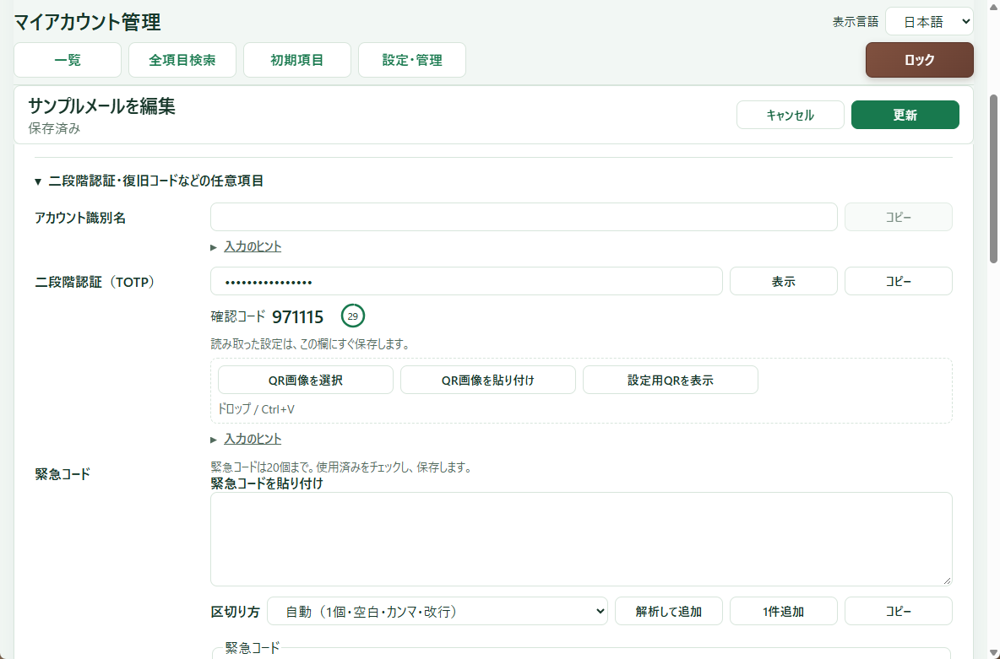
2画像ファイルを開く
QRを含む画像を選び、［開く］を押します。
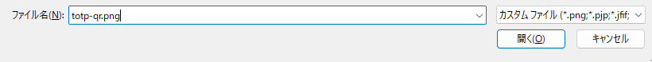
3置き換える内容を確認
既存の設定があると確認が出ます。変更する場合は［置き換えて保存］を押します。
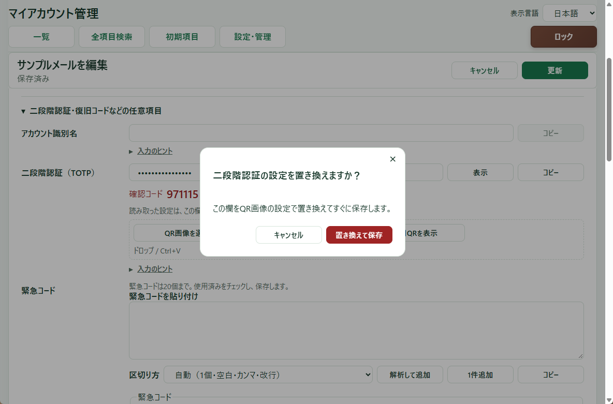
4登録結果を確認
［二段階認証を登録しました。］を確認します。
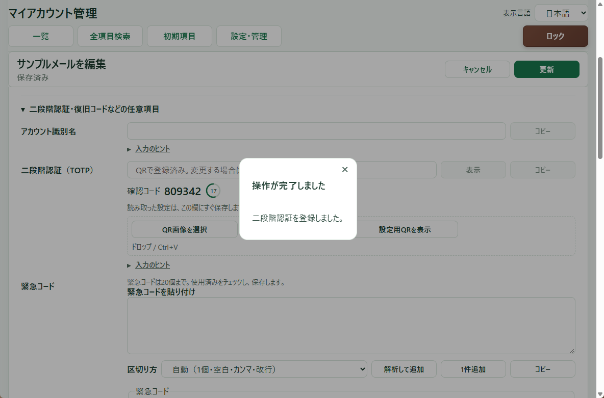
新規アカウントへ貼り付けて保存
5新規アカウントを開く
一覧の［アカウント追加］を押します。ここからは新規登録でQRを貼り付ける例です。

6必須項目を入力する
サービス名と必須の欄を入力します。例では識別名も必須に設定されています。
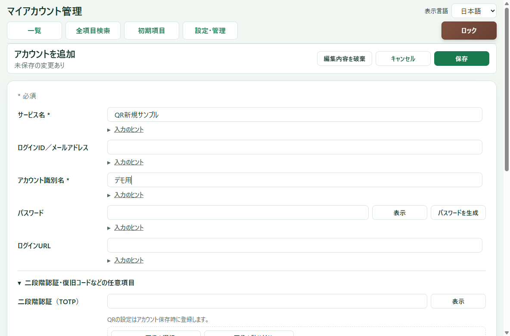
7QR画像を貼り付ける
QR画像をクリップボードにコピーし、任意項目の［QR画像を貼り付け］を押します。

8読み取り結果を確認する
読み取り完了の通知を閉じます。新規アカウントでは、まだ保管庫に保存されていません。
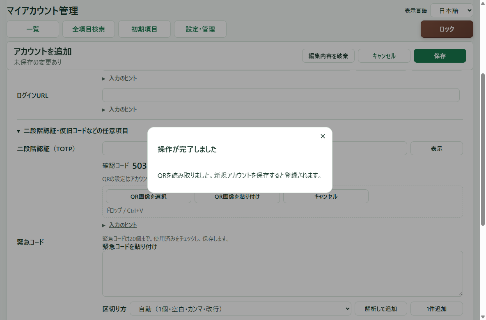
9保存待ちの設定を確認する
確認コードが表示されます。取り込みだけを中止するにはQR欄の［キャンセル］を押します。
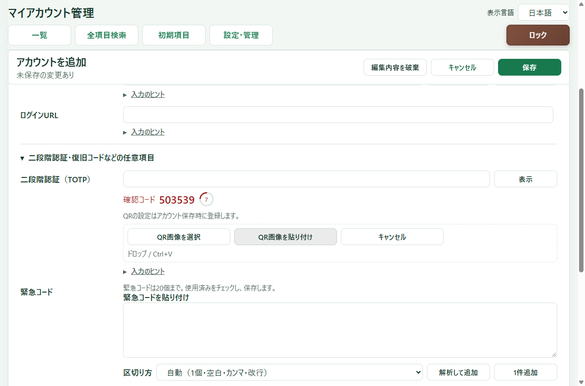
10QR取り込みの中止を確認する
確認コードが消え、QR欄が取り込み前に戻ります。サービス名などの入力は残ります。
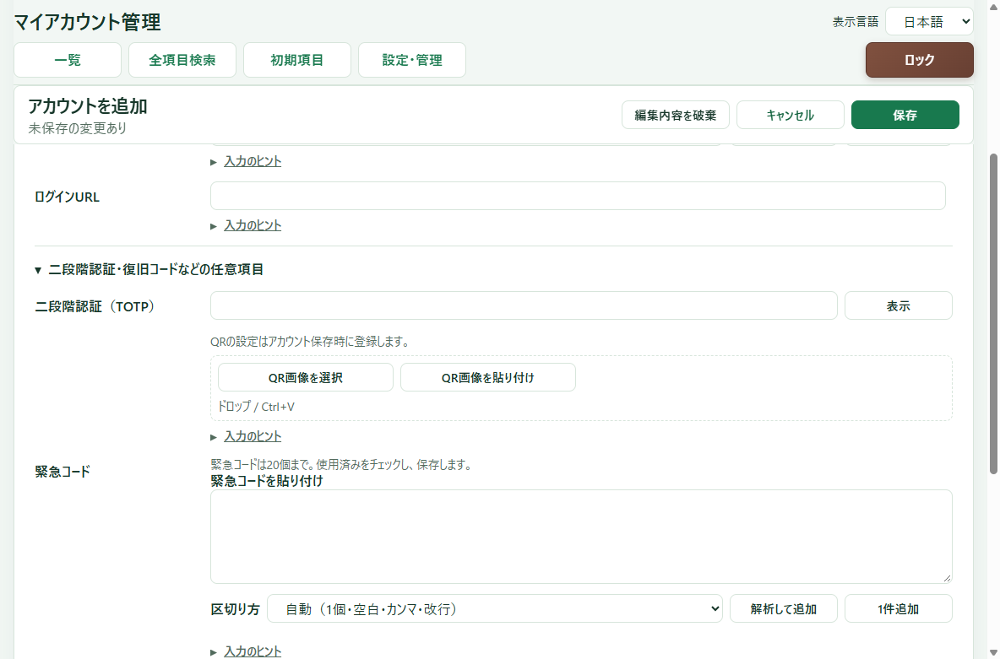
11再度取り込んで保存する
もう一度画像を貼り付けて通知を閉じ、画面上部の［保存］を押します。
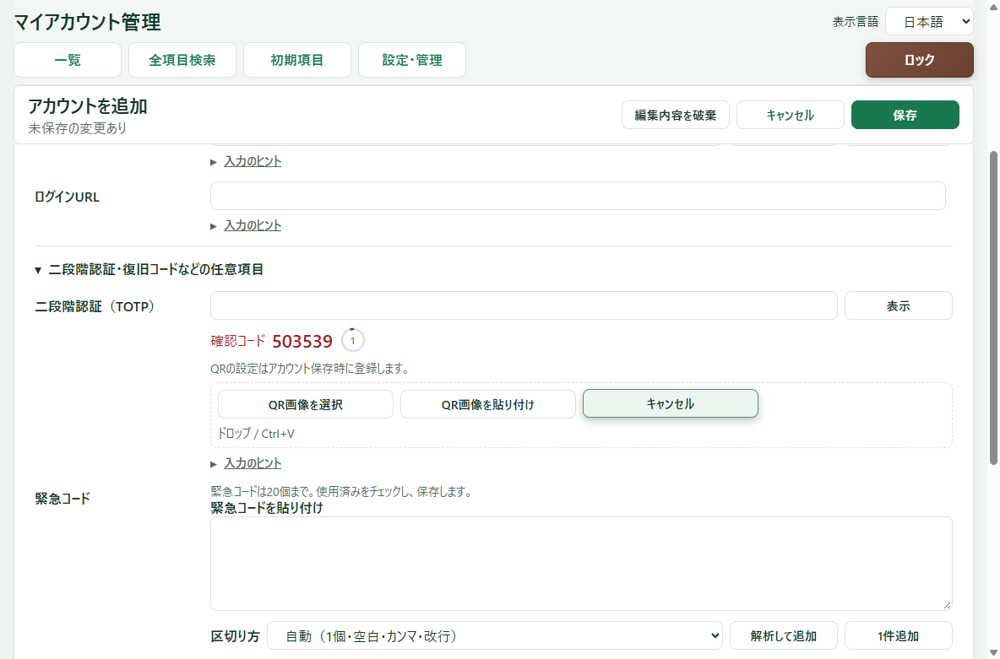
12アカウント保存を確認する
［アカウントを保存しました］を確認します。ここでQRの設定も登録されます。
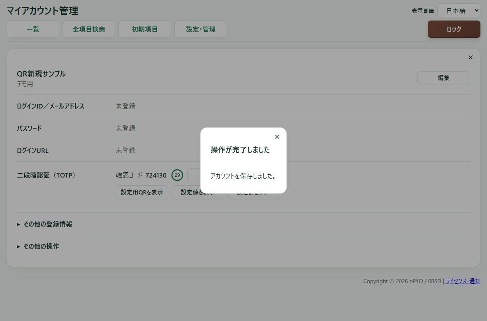
13保存後の確認コードを見る
通知を閉じ、詳細画面に二段階認証のコードがあることを確認します。
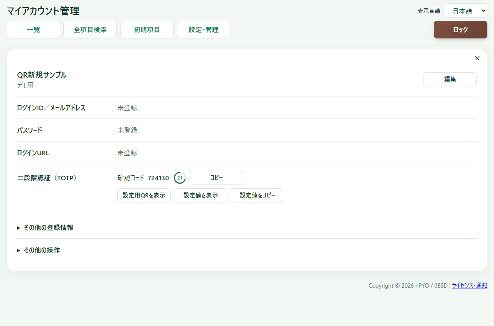
画像をドラッグ＆ドロップする
14画像をドロップする場合
新規アカウントの二段階認証欄を開きます。ここからは画像ファイルをドラッグする別の例です。
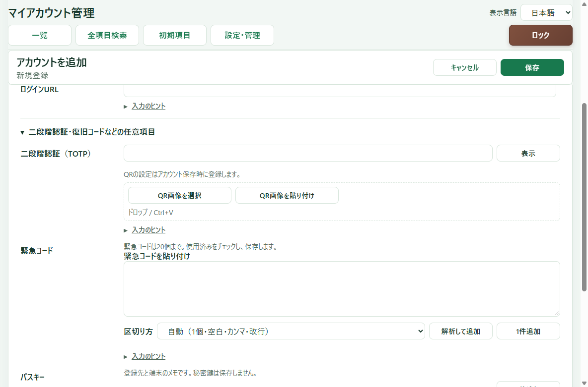
15画像ファイルを選ぶ
エクスプローラーで設定用QR画像を選択します。
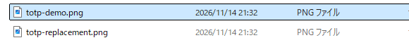
16ドロップ欄へドラッグする
画像をつかみ、［ドロップ / Ctrl+V］の枠へ運びます。枠が緑になったところで離します。
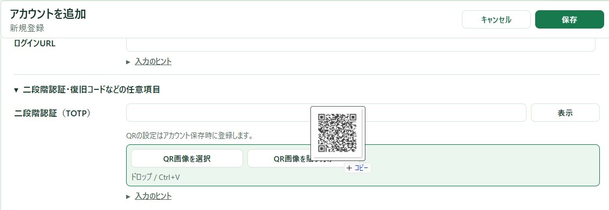
17読み取りの通知を確認する
読み取り完了の通知を閉じます。新規アカウントの保存はまだ行われていません。
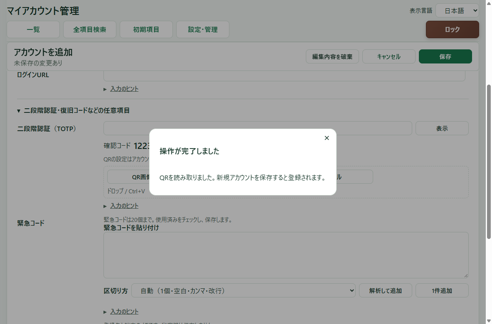
18保存待ちのコードを確認する
確認コードが表示されます。登録する場合は必須項目を入力し、上の新規登録例と同様に［保存］します。このドロップ例は読み取りまでを示しています。
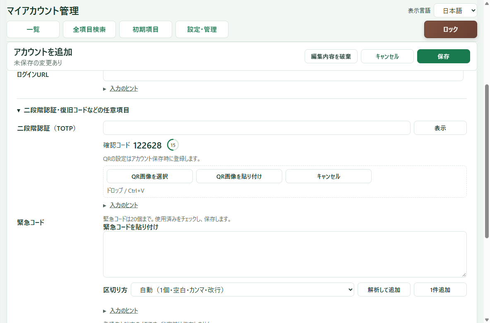